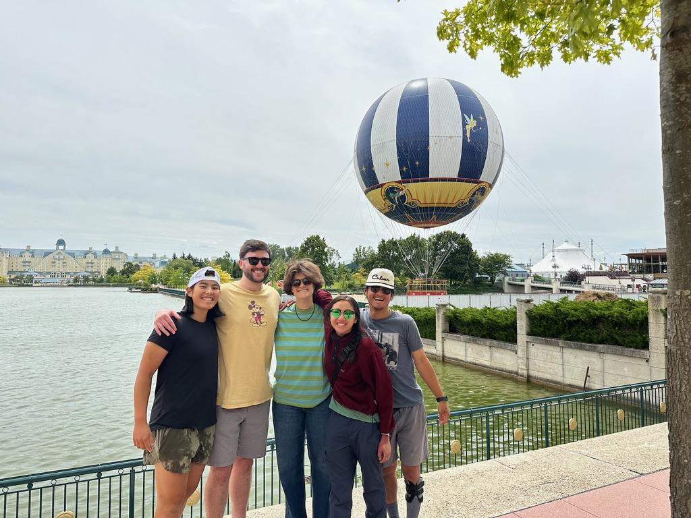
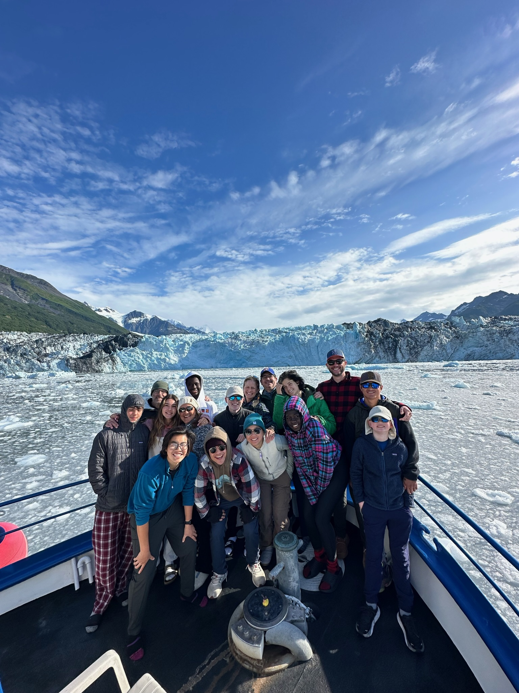

Hello my name is Josh Harris
About Me
I am studying Cybersecurity at Metropolitan State University of Denver. Here are some of the things I like to do:
- Going on hikes
- Playing basketball, tennis, and pickleball
- Spending time with family and friends
-
Traveling

Some of my siblings and I at the Paris Disneyland. 
Family trip to Alaska with family friends.